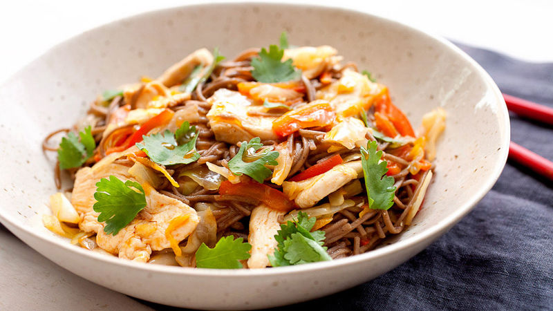

<main>
    <h1>Yakisoba Chicken</h1>
    
    <p>Japanese buckwheat flour noodles with chicken at their best! Noodles can be found in an Asian foods market.</p>
    <h3>Details</h3>
    <ul>
        <li><strong>Prep Time:</strong> 15 mins</li>
        <li><strong>Cook Time:</strong> 15 mins</li>
        <li><strong>Total Time:</strong> 30 mins</li>
        <li><strong>Servings:</strong> 6</li>
    </ul>
    <h3>Ingredients</h3>
    <ul>
        <li>1/2 teaspoon sesame oil</li>
        <li>1 tablespoon canola oil</li>
        <li>2 tablespoons chile paste</li>
        <li>2 cloves garlic, chopped</li>
        <li>4 skinless, boneless chicken breast halves - cut into 1 inch cubes</li>
        <li>1/2 cup soy sauce</li>
        <li>1 onion, sliced lengthwise into eighths</li>
        <li>1/2 medium head cabbage, coarsely chopped</li>
        <li>2 carrots, coarsely chopped</li>
        <li>8 ounces soba noodles, cooked and drained</li>
    </ul>
    <h3>Directions</h3>
    <ol>
        <li>In a large skillet combine sesame oil, canola oil and chili paste; stir-fry 30 seconds</li>
        <li>Add garlic and stir-fry an additional 30 seconds</li>
        <li>Add chicken and 1/4 cup of the soy sauce and stir-fry until chicken is no longer pink, about 5 mins</li>
        <li>Remove mixture from pan, set aside, and keep warm</li>
        <li>In the emptied pan, combine the onion, cabbage and carrots</li>
        <li>Stir-fry until cabbage begins to wilt, about 2 to 3 mins</li>
        <li>Stir in the remaining soy sauce, cooked noodles, and the chicken mixture to pan and mix to blend</li>
    </ol>
    <a href="../index.html">Return to main page</a>
</main>>